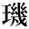
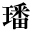
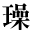

●尾崎紅葉『金色夜叉』
●内藤湖南『日本上古の状態』
●長塚節『長塚節歌集 中』
●宮本百合子『津軽の虫の巣』
●與謝野晶子『舞姫』
●幸田露伴『花のいろいろ』
●木下杢太郎『南蛮寺門前』
●桑原隲蔵『秦始皇帝』
●橋本進吉『古代国語の音韻に就いて』
●夏目漱石『吾輩は猫である』（新字・新仮名）
|
|
1_87_83.gif |
●芥川龍之介『素戔嗚尊』 ●尾崎紅葉『金色夜叉』 ●内藤湖南『日本上古の状態』 ●長塚節『長塚節歌集 中』 ●宮本百合子『津軽の虫の巣』 ●與謝野晶子『舞姫』 |
|
|
1_87_88.gif |
●芥川龍之介『金将軍』 ●幸田露伴『花のいろいろ』 |
| 1_87_89.gif |
●岡本かの子『家霊』 |
|
| 1_88_4.gif |
●内藤湖南『尚書稽疑』 |
|
| 1_88_6.gif |
●内藤湖南『日本の肖像画と鎌倉時代』 |
|
|
|
1_88_16.gif |
●菊池寛『恩讐の彼方に』 ●木下杢太郎『南蛮寺門前』 ●桑原隲蔵『秦始皇帝』 ●橋本進吉『古代国語の音韻に就いて』 |
| 1_88_22.gif |
●夏目漱石『草枕』 ●夏目漱石『吾輩は猫である』（新字・新仮名） |
|
|
|
1_88_24.gif |
●森鴎外『うたかたの記』 |
| 1_88_27.gif |
●桑原隲蔵『支那人の文弱と保守』 |
|
|  | 1_88_28.gif |
●桑原隲蔵『秦始皇帝』 |
| 1_88_29.gif |
●夏目漱石『草枕』 |
|
| 1_88_32.gif |
●内藤湖南『尚書稽疑』 |
|
|
|
1_88_37.gif |
●南方熊楠『神社合祀に関する意見』 |
|
|
2_80_65.gif |
●三遊亭圓朝、鈴木行三校訂『西洋人情話英国孝子ジョージスミス之伝』 ●三遊亭圓朝、鈴木行三校訂『業平文治漂流奇談』 |
| 2_80_85.gif |
●幸田露伴『囲碁雑考』 |
|
|  | 2_81_1.gif |
●内藤湖南『弘法大師の文芸』 |
|  | 2_81_4.gif |
●桑原隲蔵『大師の入唐』 |